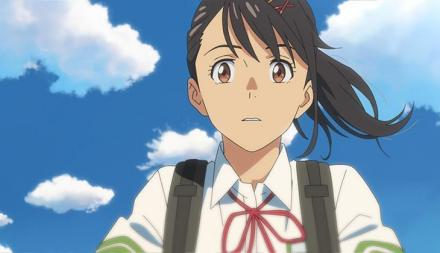
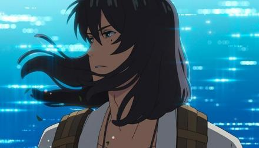
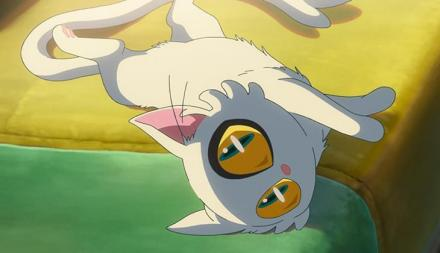
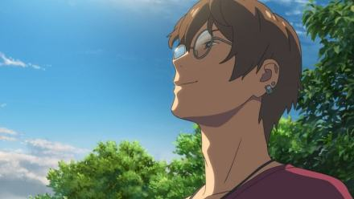

岩户铃芽
岩户铃芽，动画电影《铃芽之旅》及其衍生作品中的角色，是生活在日本九州田舍的17岁少女，由日本女演员原菜乃华配音。 某天，岩户铃芽遇见了为了寻找“门”而踏上旅途的宗像草太，追随着他的脚步，岩户铃芽来到了山上的一片废墟之地，在那她发现了一扇古老的门，铃芽仿佛被什么吸引了一般，将手伸向了那扇门……之后，在神秘之门的引导下，铃芽踏上了关门的旅途 [1] 。

宗相草太
留有中长发的神秘青年。远离尘世的「闭门师」，为阻止灾害降临踏上寻找门的旅途。同为闭门师的祖父宗像羊朗，现于东京的医院中住院。草太在前往九州某处遇到了铃芽。因某个事件发生后，变成了铃芽的椅子。

大臣
被铃芽拔出的要石，将草太变成一把椅子，引导他们在日本各地通过“闭门”来阻止地震，最后在东京，用自己和已经变成要石的草太的做交换，继续着他身为要石的职责

芹泽朋也
宗像草太的朋友，立志成为教师的立教大学教育学科大学生。言谈举止十分幽默，且很关心朋友，喜欢听昭和时代的歌曲。对草太错过教师测验一事颇有不满，在铃芽和草太旅行期间为两者提供协助。起先被环误认为是诱拐岩户铃芽的犯人，但在旅途中居间调解铃芽与岩户环的关系，令环对其改观，事后被环称赞是个适合担任教师的人选。